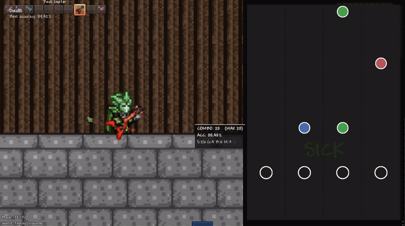

About the mod
A rhythm-game
inside Terraria.
TerraRiff is a mod that adds a fully playable rhythm-game system to your Terraria world. Shred through songs, beat your high scores and share them with friends! Play built-in bangers, or make your own with our chart editor!
- 6 built‑in songs + full custom song support
- Fully configurable controls
- Persistent playing records